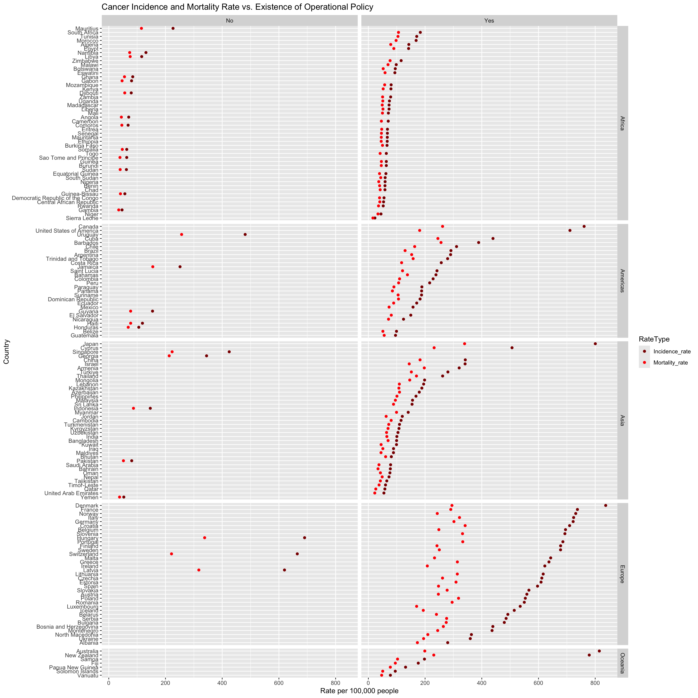
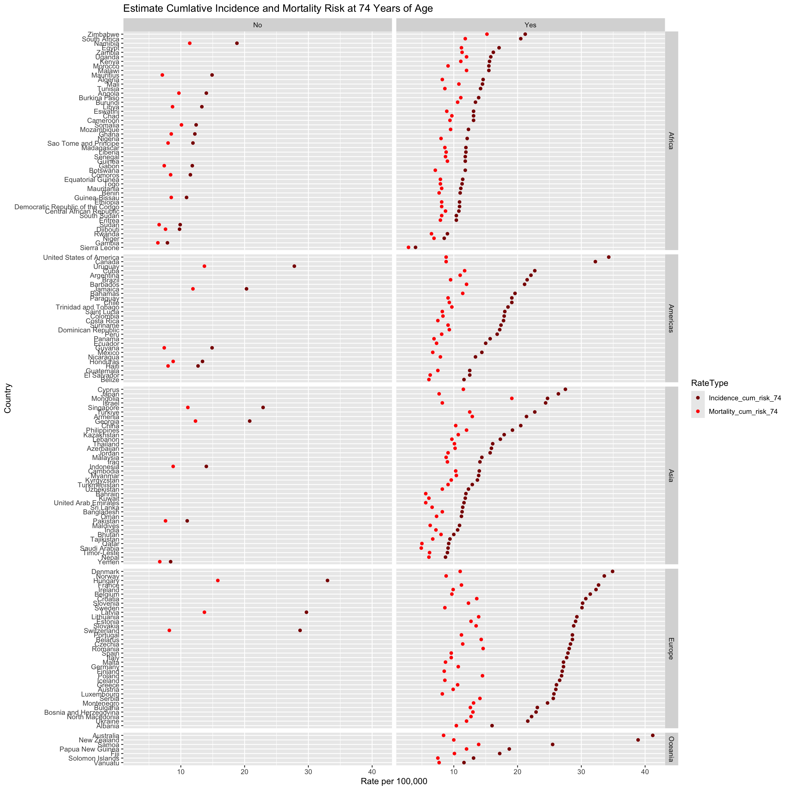

<<<<<<< HEAD
>>>>>>> 10064a70e5bf29473b4307160c96c5f14ff9d3fe
=======
>>>>>>> main
Code
library(RColorBrewer)clevelandDotPlot <- PolicyIndicdenceMortality|>dplyr::select(Incidence_rate,Mortality_rate,Value,Country,Continent) |>pivot_longer(cols =!c(Value,Country,Continent),names_to ="RateType", values_to ="Rate" )|>filter(Value!="No response")ggplot(clevelandDotPlot, aes(x=Rate,y=fct_reorder2(Country,RateType=="Incidence_rate",Rate,.desc=FALSE), color =RateType)) +geom_point()+facet_grid(Continent~Value, scales ="free_y",space="free_y")+scale_colour_manual(values=c("darkred","red"))+scale_fill_manual(labels =c("Incidence Rate", "Mortality Rate"))+labs(title ="Cancer Incidence and Mortality Rate vs. Existence of Operational Policy", x ="Rate per 100,000 people", y="Country")

In this plot we explore if there are any correlations between Cancer Incidence Rate, Continent, Country and existence of Operational Policy’s. Across all types of operational policy and continents we see that cancer morality rate is always lower than cancer incidence rate. For all Operational Policies and Continents except for Europe, as the Incidence Rate increased, so does the mortality rate generally with the same increasing gap between Incidence Rate and Mortality Rate. However, In Europe, for Countries that have Operational Policies in place for cancer generally the gap between Incidence and Mortality rate seems to increase and shows that Mortality Rate seems to plateau at 375 per 100,000 people even though, Incidence Rate is not at a consistent value for those countries. This could indicate that the countries that have a larger gap between mortality and incidence rate either have more sensitive cancer detection methods , more rigorous cancer treatments available or easier access to health care. To further explore this question, we would need to look more into the types of cancer detection methods, treatments and compare access to health care for these countries. For example, it would interesting to compare Denmark and Poland more closely as their mortality rate is similar, but incidence rate is very different for these countries.
One limitation of this plot is that the rates are from 2022 and the Operational Policy data is from 2021. During the data collection process, we were unable to find rates from 2021 or Operational Policy data for 2022 based on how the data is reported. Therefore, this plot does not represent the same year; however, we chose to move forward with this plot because there is potential for correlation and trend discovery between Operational Policy in 2021 and Rates in 2022 if the Operational Policies do not change. Afghanistan and Lesotho were filtered out of the data since they have no response for Operational Policy and their rates do not add value to the analysis since their rates are same.
Code
clevelandDotPlot <- PolicyIndicdenceMortality|>dplyr::select(Incidence_cum_risk_74,Mortality_cum_risk_74,Value,Country,Continent) |>pivot_longer(cols =!c(Value,Country,Continent),names_to ="RateType", values_to ="Rate" )|>filter(Value!="No response")ggplot(clevelandDotPlot, aes(x=Rate,y=fct_reorder2(Country,RateType=="Incidence_cum_risk_74",Rate,.desc=FALSE), color =RateType)) +geom_point()+facet_grid(Continent~Value, scales ="free_y",space="free_y")+scale_colour_manual(values=c("darkred","red"))+scale_fill_manual(labels =c("Incidence Rate", "Mortality Rate"))+labs(title="Estimate Cumlative Incidence and Mortality Risk at 74 Years of Age", x ="Rate per 100,000", y="Country")

In this plot, we investigate the cumulative risk cancer incidence and mortality by age 74 and compare it by country, operational policy and continent. Countries that did not have an operational policy in-place have similar risks for dying from cancer at age 74 while the incidence rate varies in this group. In the yes there is an operational policy group, there the mortality risk rate is generally similar across all continents; however incidence rate seems to the highest in Europe and some countries in the Americas and Asia. The trend observed in European countries that have operational policies suggest that there is excellent treatment opportunities or perhaps the cancers that people have risk for are not deadly. The previous statement would need to be investigated further to understand the exact cause of this relationship. In Africa, countries that have existing operational policies show a small gap between mortality and incidence rate.
In this plot, we remove the no response group at their estimated rates where similar and we could draw any conclusion for that group.
Amount of High, Mid and Low Data Points for Cancer Estimates Across All Years for All Groups and Subgroups:
Based on this mosaic plot, the proportions of groups that have low, mid or high percentages of having cancer is generally the same. In this graph, the Low category represents less that in this group there is less than 10% of people have cancer, while mid corresponds to greater than 10% and less than 20%. Finally, the High estimate corresponds to greater than 20%, but less than 30% and the Highest group is great than 30%. In this data, the highest percentage of a group that has cancer is 32.6% which results in even bin intervals for the data. While there is a slight decrease in the proportion of groups that are in the Mid percentage bin, across the years, we generally see cancer percentages across groups are generally of equal proportions. While we are not tracking individual groups in this plot, we are able to see how proportions of cancer percentages vary over the years as a whole. From this graph, we can see that we will need to investigate individual groups more closely to identify where the differences come from.
To begin analyzing the differences amount groups and the respective cancer rates, we chose to look at the difference in proportions of Education, Employment Status and Poverty Level and the corresponding cancer estimate level across years. We see that more education subgroups are associate with the 10-20% cancer mid bin as opposed to the low or less than 10% cancer rate bin. The employment status groups generally have the same proportion in the mid and low estimate levels and there seem to be no high or highest estimate levels in these groups. We also see that for some years, there are different proportions of responses in each group - indicating that we do not have the same subgroups responding over the years. The Education group has more mid estimates as opposed to the employment status and poverty level groups. It be interesting if the education group could be divided into their respective employment status group.
One limitation of this data is that we are comparing the estimates across different groups and some individuals may belong to multiple groups; however, the reported data does not show where individuals are repeated.
ggplot(AllCancerData_lumps_new_4, aes(x=Estimate,y=fct_reorder2(Subgroup,Estimate_Level=="Low",Estimate,.desc=FALSE), color =Estimate_Level)) +geom_point()+facet_grid(Group~., scales ="free_y",space="free_y")+scale_colour_manual(values=c("darkred","red"))+scale_fill_manual(labels =c("Incidence Rate", "Mortality Rate"))+labs(title="Estimate Cumlative Incidence and Mortality Risk at 74 Years of Age", x ="Rate per 100,000", y="Country")
<<<<<<< HEAD
>>>>>>> 10064a70e5bf29473b4307160c96c5f14ff9d3fe
=======
>>>>>>> main
<<<<<<< HEAD
<<<<<<< HEAD
=======
=======
>>>>>>> main
In this plot, it is visible that most subgroups consistently have the same estimated level of cancer indicating there is correlation in subgroups across years. This plot includes data for all years. Rows that have multiple data points include multiple years and it is evident that across years, the estimated level of cancer is consistent for all groups except >= 200 FPL. Additionally, there is a clear disparity for cancer rate among the people who fall into not employed and has never worked, full-time, employed, part-time and those who are not employed or not employed but worked previously. The latter have a higher cancer rate than the former. This is may be due to the fact that some people cannot work due to having cancer which is why the not employed groups are higher.
<<<<<<< HEAD
>>>>>>> 10064a70e5bf29473b4307160c96c5f14ff9d3fe
=======
>>>>>>> main
We can use a PCA plot to discover if certain subgroups may be correlated with one another in terms of cancer estimates. It may be possible that the correlation comes individuals who belong to one subgroup may belong to the second subgroup. It seems that the subgroup Asian only could be correlated with cancer estimates with the >= 200% FPL and White Only subgroup. While the subgroups <100% FPL and Alaska Native and White may be correlated. This graph is not meant to imply resulting causation but can be leveraged to look into how different subgroups over lap and if overlapping subgroups may have higher or lower rates of cancer.
By plotting all subgroups on the parallel coordinates plot, we can identify which subgroups have which estimate percent per year for cancer. Additionally, we are able to see that for most subgroups, the cancer rate stays the same across the sample years. We only see a change in cancer rate for the Alaska Native and White, health insurance subgroups and without disability subgroups. This graph gives an overview time series for all groups and is what we chose to build our d3 interactive plot from. This can be a starting point that allows the observer to identify which individual subgroups to explore more closely to see cancer rates over the years.
In this map, there are clear regional patterns surrounding the incidence rates of cancer. Much of the western world has very high cancer rates, with the United States, Canada, Australia, New Zealand, and much of northern and western Europe having more than 600 cases of cancer per 100,000 people. By contrast, most African countries have between 0 and 100 cases of cancer per 100,000 people. Asian and South American countries tend to fall somewhere in between these two extremes, though Japan has rates more similar to the West than to the rest of Asia. There are many reasons that could explain this disparity, which we will explore later. Some factors may have to do with lifestyle, or they may have to do with response bias. Do countries that have better medical infrastructure catch and report cancer at a higher rate? It is possible.
Much like cancer incidence rates, the West tends to have higher levels of mortality than the rest of the world. However, it is not as stark a difference here. While Canada and almost all of Europe have mortality rates of at least 200 per 100,000 people, some Asian and South American countries have a disproportionately high mortality rate compared to the incidence rate. Most of Africa again has very low rates of death from cancer, though South Africa and Tunisia have higher rates than the rest of the continent.
To see which factors may influence cancer incidence and mortality rates in each country, we will look at the number of physicians per 1,000 residents, the percent of a country’s GDP that goes towards healthcare expenditure, and the percent of a country’s entire domestic spending that goes towards healthcare expenditure. Since we have incidence and mortality rates for the year 2022 and we have inconsistent data across countries for physician counts, GDP, and domestic spending, we will average the physician counts, GDP, and domestic spending across 2015-2021, which is the most recent data we have and the smallest range we can include that still encompasses most countries. It will not be a perfect tally, but it is the best estimate we can create given the data we have access to.
We see in the above graph that incidence rate and mortality rate have a strong positive correlation (0.946), indicating that countries with higher rates of cancer also have higher rates of death from cancer. Interestingly, the incidence rate of cancer also has a positive correlation with the number of physicians operating in the country (0.785) and with the percentage of a countries money spent on healthcare (0.624 for GDP, 0.624 for domestic spending). While correlation does not equal causation, one potential reason for this is that with more investment and more doctors working in a country, there are more opportunities to find cancer. Mortality rate is also positively correlated with each of these three measures, though GDP spent and domestic spending are not as strongly correlated.
Code
#scatterplot of incidence rate vs. doctor rateggplot(data=cancer_exp_phy_2015_2022, aes(x=avg_phy_rate, y=Incidence_rate, color=as.factor((mortality_rate_categorical))), na.rm=TRUE)+geom_point(na.rm =TRUE) +labs(x="Average Physician Rate (per 1000), 2015-2021", y="Cancer Incidence Rate (per 100k), 2022", color ="Cancer Mortality Rate\n(per 100k)", title ="Cancer Rates vs. Number of Physicians by Country")+scale_color_brewer(palette ="YlGnBu",na.translate =FALSE) +theme_minimal()
Looking more closely at the relationship between cancer incidence rate and the number of physicians in a country, we can see that as a country has more physicians per 1,000 people, the rate of cancer increases. The data is more concentrated at the lower end of the spectrum - countries with almost no doctors also have almost no cancer reported. The data fans out as the number of physicians increases. At one extreme, once country (Cuba) has more than 8 physicians per 1,000 people and about 450 cancer cases per 100,000, while Japan has just 2.6 physicians per 1,000 people but a cancer rate of 800 per 100,000. We can also see clearly with color here that countries that have higher cancer rates and more physicians also have higher mortality rates, showing again just how correlated this data is.
Code
ggplot(cancer_exp_phy_2015_2022, aes(x=avg_pct_domestic_spending, y=Incidence_rate, color=mortality_rate_categorical))+geom_point(na.rm =TRUE) +facet_wrap(~continent, ncol =1)+labs(color ="Mortality Rate\n(per 100k)", x="% Domestic Spending", y="Incidence Rate (per 100k)", title ="Cancer Rates by Domestic Healthcare Spending") +scale_color_brewer(palette ="YlGnBu",na.translate =FALSE) +theme_minimal()+theme(panel.grid.major =element_line(linewidth =0.2, color ="black"),panel.grid.minor =element_line(linewidth =0.1, color ="black"))
Europe is very apparently the standout continent. Most countries in Europe spend between 10 and 20% of their domestic spending on healthcare, have cancer rates of 400 to 800 people per 100,000, and have cancer mortality rates of 250+ per 100,000. This is far higher on average than any other continent. Africa falls on the other end of the extreme, with most countries having fewer than 200 cancer cases per 100,000 people, spending less than 10% of domestic spending on healthcare, and mostly having cancer mortality rates less than 100 per 100,000 people. Asian and North American countries show more variation across these three metrics. There are Asian countries with incidence rates as low as 58 and as high as 800 per 100,000 people, with mortality rates as low as 26 and as high as 339, and with domestic spending as low as 2% and as high as 23%. Interestingly, Japan is the highest in Asian country in all 3 of these categories. Also of note is how South American countries are similarly compact in their level of domestic spending as European countries, with almost all falling between 10% and 20%, yet their incidence and mortality rates are far lower than Europe’s. It goes to show that while there does appear to be a positive correlation domestic spending and incidence rates, there are clearly other factors in play too.
Code
mosaic(incidence_rate_categorical_4 ~ avg_phy_rate_categorical_2 + avg_gdp_categorical_3, direction =c("v", "v", "h"),data = cancer_exp_phy_2015_2022, highlighting_fill =brewer.pal(4, "Reds"),rot_labels=0,labeling_args =list(set_varnames =c(avg_phy_rate_categorical_2 ="Physicians per 1k",incidence_rate_categorical_4 ="Incidence Rate (per 100k)",avg_gdp_categorical_3 ="% GDP Spending")),main ="Cancer Rates by GDP Spending and Doctors",cex.main =0.5)
Looking at how the cancer rates, amount of GDP spent on healthcare, and the number of physicians in the country, we can see some stark differences. Overwhelmingly, countries that spend less and have fewer doctors have lower rates of cancer. More than half of countries that spend less than 5% of their GDP and have 0 to 2 physicians per 1,000 people have lower than 100 cancer cases per 100,000. No country under these parameters has a cancer rate above 300 per 100,000. Notably, the limited number of countries that spend more than 10% of their GDP on healthcare but have 0 to 2 physicians per 1,000 people all have a cancer rate of less than 100. Contrarily, in countries with more than 2 physicians per 1,000 people, the cancer rates are much higher. On top of that, as these countries spend more of their GDP on healthcare, the cancer rates increase even more to the point that every single country that has more than 2 physicians per 1,000 people and spends more than 10% of their GDP has a cancer rate of 300 or more. The overwhelming majority of countries with 2 per 1,000 physicians that spend between 5-10% of their GDP also have cancer rates of more than 300 per 100,000. While this mosaic plot demonstrates a relationship between both GDP spending and cancer rates and number of physicians and cancer rate, it makes plain that the number of doctors has a much stronger relationship with cancer rates than the percent of a country’s GDP is spent on healthcare.
By plotting all subgroups on the parallel coordinates plot, we can identify which subgroups have which estimate percent per year for cancer. Additionally, we are able to see that for most subgroups, the cancer rate stays the same across the sample years. We only see a change in cancer rate for the Alaska Native and White, health insurance subgroups and without disability subgroups. This graph gives an overview time series for all groups and is what we chose to build our d3 interactive plot from. This can be a starting point that allows the observer to identify which individual subgroups to explore more closely to see cancer rates over the years.
<<<<<<< HEAD
>>>>>>> 10064a70e5bf29473b4307160c96c5f14ff9d3fe
=======
>>>>>>> main